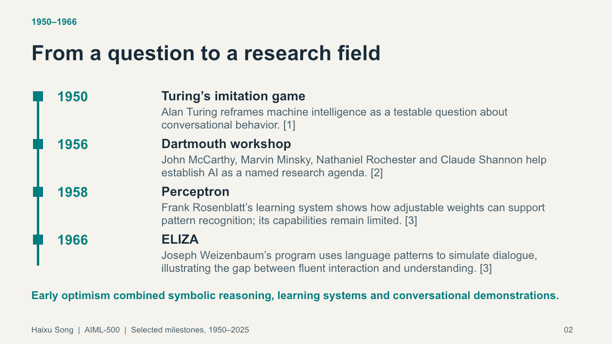
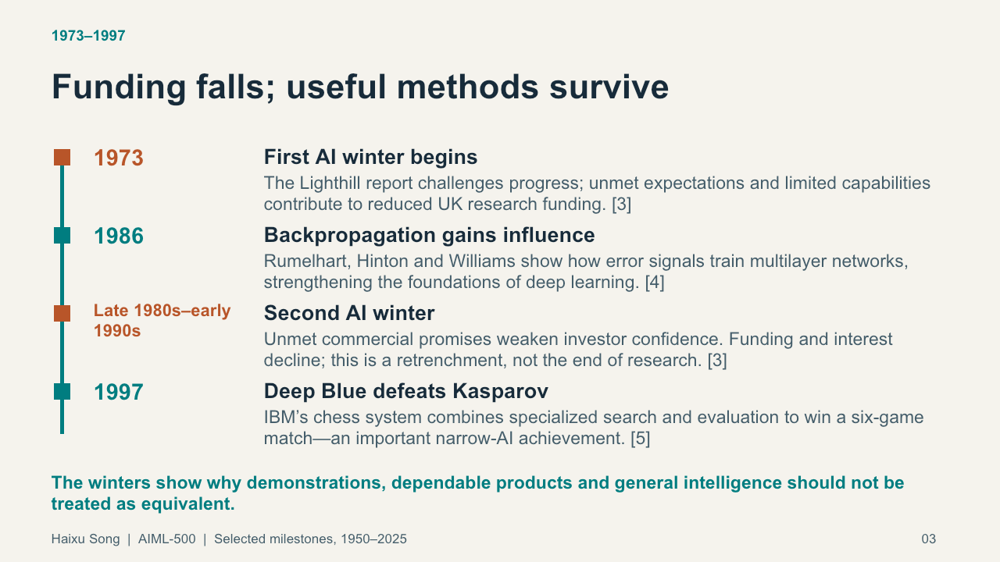
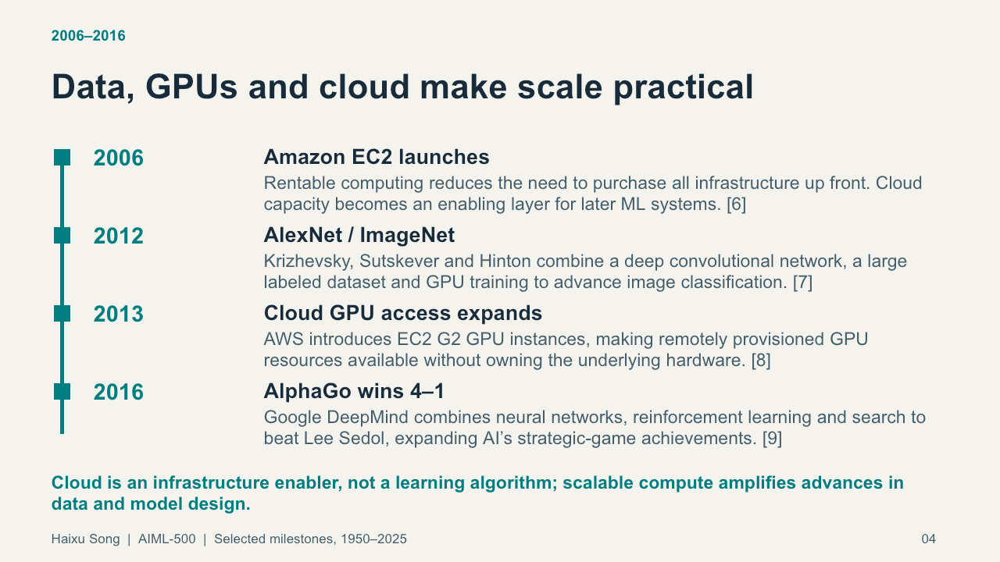
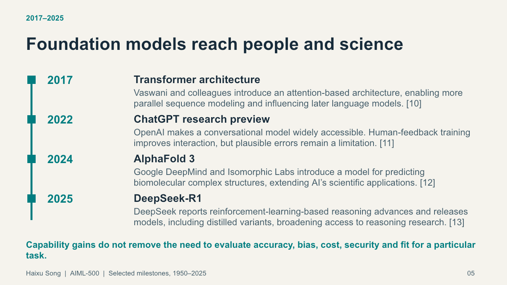

About me
I am a senior software engineer at Walmart in Bentonville, Arkansas, and a student in Indiana Wesleyan University’s Machine Learning Fundamentals course.
What I bring
This portfolio brings a software engineering perspective to learning about AI and machine learning, with attention to clear explanations, evidence, limitations, and human review. The projects show how these topics can be considered in practice.
AI & machine learning: advances and resets
Introduction
A visual timeline of selected milestones from 1950 through 2025, prepared for readers who want a clear introduction to how AI research, computing infrastructure, and expectations have shaped one another.
Description
The artifact is a visual PowerPoint timeline spanning 1950–2025. The images below show selected slides; the editable presentation includes source notes.
Download the PowerPoint timelineObjective
Explain major developments in AI and machine learning, including periods when funding and interest declined, and connect historical advances to the practical question of whether a system can reliably solve a specific problem.
Process
The presentation organizes a selective chronology across four periods. It connects research milestones with datasets, GPUs, cloud infrastructure, and the limits of ambitious claims. The timeline is chronological, but spacing is not proportional to elapsed time. The editable PowerPoint includes source links in slide notes. OpenAI Codex assisted with research organization, wording, and slide construction.
A classmate's feedback prompted a clarification: cloud computing and deep learning developed in overlapping periods. Amazon EC2 launched in 2006, AlexNet's ImageNet paper appeared in 2012, and AWS announced EC2 G2 GPU instances in 2013. The sequence does not mean cloud services began after AlexNet. This clarification is added to the portfolio page; the original presentation remains unchanged.
Tools and technologies used
PowerPoint, GitHub Pages, and OpenAI Codex. Codex assisted with research organization, wording, and slide construction.
Value proposition: unique value and relevance
For colleagues and other learners, the timeline offers context for evaluating AI claims. It distinguishes a compelling demonstration from a reliable deployment and shows why data, compute, operating cost, and responsible use deserve attention alongside model performance.




References
- Turing, A. M. (1950). Computing machinery and intelligence.
- McCarthy, J., Minsky, M., Rochester, N., & Shannon, C. (1955). A proposal for the Dartmouth summer research project on artificial intelligence.
- IBM. (2026). The history of artificial intelligence.
- Krizhevsky, A., Sutskever, I., & Hinton, G. E. (2012). ImageNet classification with deep convolutional neural networks.
- Amazon Web Services. (2010). Happy fourth birthday, Amazon EC2; and (2013). Announcing new Amazon EC2 GPU instance type.
- Vaswani, A., et al. (2017). Attention is all you need.
Additional references and full links appear in the presentation.
A Practical Guide to Reviewing an AI Incident-Review Assistant
Introduction
This guide is intended for engineering colleagues exploring AI-assisted incident review with human oversight.
Description
A short, reusable guide based on the course AI Lab prototype. It sets a data boundary, gives a fictional scenario, and provides checks for uncertainty, privacy, and human control.
Read the complete guideObjective
Show how to evaluate whether an assistant distinguishes observations from hypotheses, asks useful follow-up questions, and maintains a human-review boundary.
Process
The lab explored an incident-review assistant using fictional or sanitized reports. Codex assisted in creating a private prototype and testing it on a fictional incident sequence and a suspected-secret and rollback scenario. The guide condenses the documented tests into a reusable checklist and labels what was observed and what remains untested.
Tools and technologies used
OpenAI Codex, a private Incident Review Coach prototype, and fictional text-based test cases.
Value proposition: unique value and relevance
The guide combines a concrete example with evaluation criteria and safety boundaries rather than treating a fluent summary as evidence of a root cause. It gives engineering teams a starting point for evaluating assistants while preserving human responsibility for operational decisions.
References
The course AI Lab report and its two fictional test scenarios. The prototype is private and is not presented as publicly accessible.